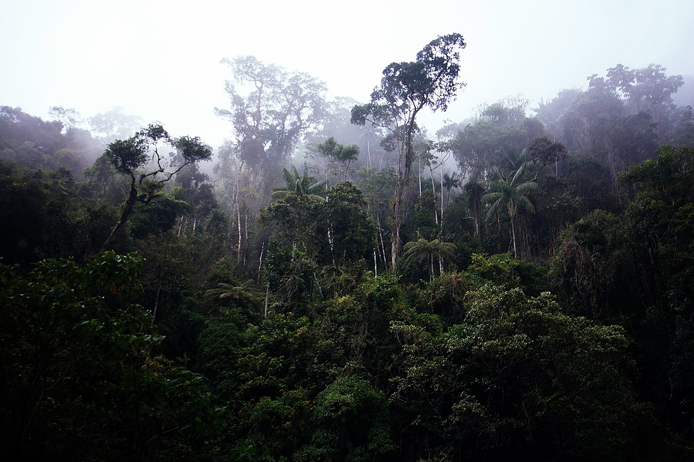
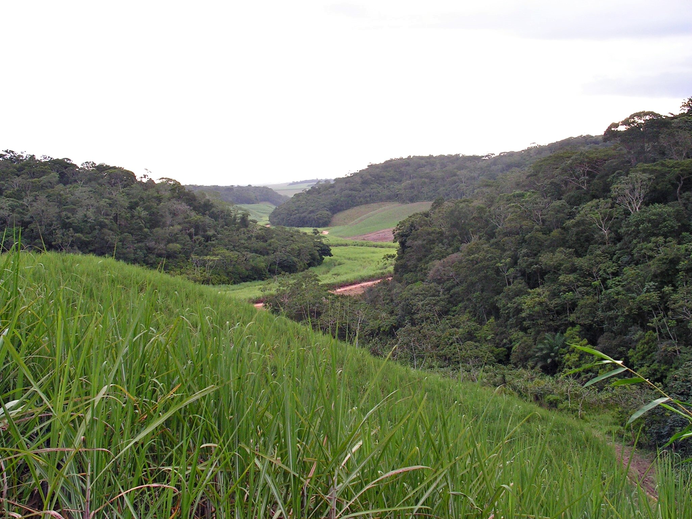
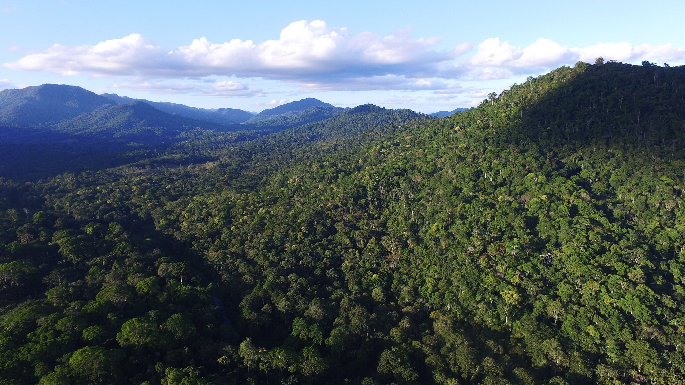
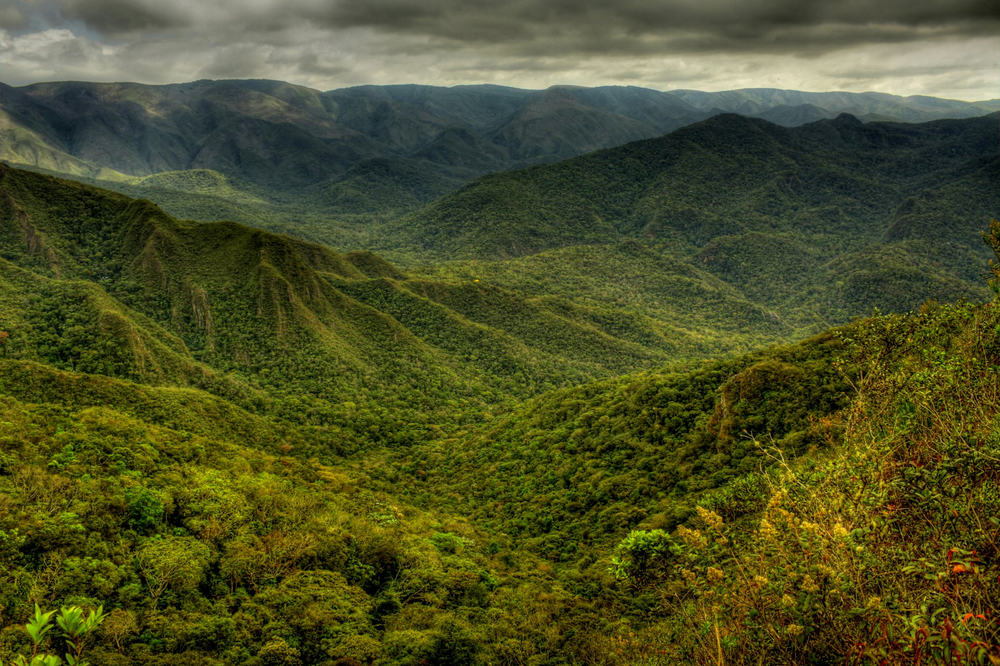

Mata Atlântica





INFORMAÇÕES SOBRE O BIOMA
Área Total do Bioma
Este bioma ocupava uma área de 1.110.182 Km², e correspondia a 15% do território nacional mas hoje restam apenas 12,5% da floresta que existia originalmente. É constituída principalmente por mata ao longo da costa litorânea que vai do Rio Grande do Norte ao Rio Grande do Sul.Clima
- O clima predominante na Mata Atlântica é o tropical úmido, que apresenta temperaturas elevadas e extensos períodos de chuvas, muito abundantes.
- Temperatura média: A temperatura varia 21,7-30,8 ° C, e umidade do ar entre 80 e 85%.
- Precipitação: A precipitação anual oscila entre 750 a 1000 mm.
Relevo
- O relevo da Mata Atlântica é constituído por principalmente por planícies costeiras e colinas que são acompanhadas por uma cadeia de montanhas. Os solos da Mata Atlântica não possuem fertilidade elevada.
Hidrografia
- A Mata Atlântica abriga uma intrincada rede de bacias hidrográficas formadas por grandes rios como o Paraná, o Tietê, o São Francisco, o Doce, o Paraíba do Sul, o Paranapanema e o Ribeira de Iguape.
Vegetação
- A Mata Atlântica é composta por formações florestais nativas (Floresta Ombrófila Densa; Floresta Ombrófila Mista, também denominada de Mata de Araucárias; Floresta Ombrófila Aberta; Floresta Estacional Semidecidual; e Floresta Estacional Decidual), e ecossistemas associados (manguezais, vegetações de restingas, campos de altitude, brejos interioranos e encraves florestais do Nordeste).
Fauna
- Entre as espécies mais conhecidas da fauna da Mata Atlântica estão o mico-leão dourado, o bicho preguiça, a onça-pintada, a capivara, o tamanduá-bandeira, a jaguatirica, o tucano, o beija-flor, as araras, o jacaré-do-papo-amarelo, a rã-de-vidro, o pacu e o pintado.
Visão Geral
- A Mata Atlântica é um dos biomas mais ricos e biodiversos do Brasil, abrangendo uma vasta área ao longo da costa do país, desde o Rio Grande do Norte até o Rio Grande do Sul. Originalmente, cobria cerca de 1,3 milhão de quilômetros quadrados, mas devido ao desmatamento, restam apenas fragmentos de sua vegetação nativa. Esse bioma é caracterizado por uma grande diversidade de espécies de flora e fauna, muitas das quais são endêmicas e estão ameaçadas de extinção. Além de sua biodiversidade, a Mata Atlântica desempenha um papel fundamental na regulação climática, no ciclo da água e na proteção do solo. É vital para o equilíbrio ambiental, mas enfrenta ameaças constantes de urbanização e exploração econômica. A conservação da Mata Atlântica é essencial para preservar esses serviços ecológicos e garantir a sobrevivência das espécies que ali habitam.
Curiosidades
- Diversidade de Espécies A Mata Atlântica abriga cerca de 20.000 espécies de plantas e aproximadamente 2.200 espécies de animais, muitas das quais são endêmicas, ou seja, só podem ser encontradas nesse bioma.
- Ameaçada de Extinção A Mata Atlântica foi amplamente desmatada ao longo dos séculos. Hoje, restam apenas cerca de 12% da área original do bioma. Mesmo assim, as áreas restantes são de grande importância para a biodiversidade mundial.
- Clima e Características A Mata Atlântica se caracteriza por um clima tropical, com uma grande variedade de tipos de vegetação, como florestas de araucárias, manguezais, restingas e até campos de altitude. Ela se estende desde a Bahia até o Rio Grande do Sul, cobrindo uma grande diversidade de paisagens.
- Áreas de Proteção Existem diversas unidades de conservação, como parques e reservas, que visam proteger as áreas remanescentes da Mata Atlântica. Algumas dessas áreas, como o Parque Nacional de Itatiaia e a Reserva Biológica de Poço das Antas, são fundamentais para a preservação de espécies ameaçadas, como o mico-leão-dourado e a onça-pintada.
- O Papel nas Chuvas A Mata Atlântica tem um papel crucial no ciclo hidrológico e na formação de chuvas. As árvores da floresta liberam vapor d'água, que se condensa nas nuvens e contribui para a manutenção das chuvas regulares na região. Por isso, sua preservação é essencial para a estabilidade do clima e a disponibilidade de água.
- Conexões com o Mar O bioma também inclui ecossistemas costeiros, como manguezais e restinga. Essas áreas são vitais para a proteção das zonas costeiras, além de servirem como berçários para diversas espécies marinhas, como peixes e crustáceos.
- O Mico-Leão-Dourado Uma das espécies mais emblemáticas da Mata Atlântica é o mico-leão-dourado, um pequeno primata que habita as florestas do Rio de Janeiro. Este animal foi considerado extinto na natureza na década de 1980, mas graças a esforços de preservação, como programas de reintrodução, sua população tem aumentado.
- O Corredor Ecológico Para ajudar na recuperação de áreas desmatadas e na preservação de espécies, foram criados corredores ecológicos que conectam fragmentos de florestas, permitindo a migração e a reprodução de animais e a troca genética entre populações.
- Amazônia x Mata Atlântica Muitas pessoas associam a Amazônia como a maior floresta tropical do Brasil, mas a Mata Atlântica é, na verdade, mais biodiversa em termos de espécies de plantas e animais. Seu valor ecológico é imenso, não só por sua biodiversidade, mas também pelos serviços ambientais que oferece.
- A Vegetação de Altitude Em áreas mais altas da Mata Atlântica, como no Planalto Paulista e nas serras do Rio de Janeiro, a vegetação é composta por florestas de araucárias e campos de altitude. Essas regiões abrigam espécies raras de plantas, como orquídeas e bromélias, além de animais como o papagaio-de-cara-roxa.


Exemplo de Vegetação da Mata-Atlântica

Exemplo de Vegetação da Mata-Atlântica

Bicho-Preguiça

Rã-de-vidro

Pacu